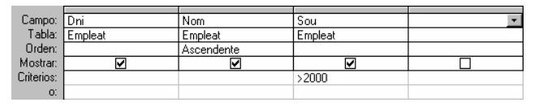

5. Llenguatges relacionals
Fins el moment hem dissenyat una B.D. Relacional. Però si volem la B.D. és per consultar-la, treure la informació que ens interessa, manipular-la. Ens farà falta, per tant, un llenguatge de manipulació de la B.D. (DML). Aquestos llenguatges poden estar basats en l'Àlgebra Relacional o en el Càlcul Relacional.
- Per mig de l'ÀLGEBRA RELACIONAL farem operacions sobre les taules, combinant-les, seleccionant el que ens importa, ..., en definitiva manipulant-les. El resultat serà una nova taula, que serà el resultat final o servirà per a fer una altra operació. Les operacions poden ser projecció (agafar algunes columnes d'una taula), selecció (seleccionar algunes files d'una taula, les que acompleixen una determinada condició), unió, intersecció, producte cartesià, reunió ...
El llenguatge SQL, que és l'estàndard de fet i que veurem en el tema 6, està basat en l'Àlgebra relacional. Les sentències són de la forma:
SELECT dni, nom, sou
FROM EMPLEAT
WHERE sou > 2000
on estem projectant sobre els camps dni, nom i sou, i seleccionant les files que acompleixen la condició del final
Anem a comentar dues de les operacions esmentades abans. El producte cartesià de dues taules consisteix en combinar cadascuna de les files d'una taula amb cadascuna de les files de l'altra. Així, el producte cartesià de Empleat i Departament seria:
SELECT dni, nom, nom_d
FROM EMPLEAT , DEPARTAMENT
Però aquest operació no sembla tenir molt de sentit en aquest cas ¿per a què volem combinar un empleat amb tots els departaments de l'empresa? Sembla molt més lògic combinar cada empleat únicament amb el departament al qual pertany.
La reunió de dues taules consisteix en fer un producte cartesià i després seleccionar les files que tenen el mateix valor en dos camps determinats (un de cada taula).
SELECT dni, nom, nom_d
FROM EMPLEAT , DEPARTAMENT
WHERE EMPLEAT.departament = DEPARTAMENT.num_d
És a dir, del producte cartesià seleccionem només les files en les quals coincideixen els camp departament i num_d, combinant cada empleat amb el seu departament.
-
En el CÀLCUL RELACIONAL, es defineixen variables de tipus taula, s'utilitzen operadors entre les variables, i també uns quantificadors (per a tot i existeix). Va de forma paral·lela a l'àlgebra de manera que es poden obtenir les mateixes coses amb l'Àlgebra i amb el Càlcul.
El QBE (Query By Example) es basa en el càlcul relacional, i la seua particularitat és la senzillesa de fer consultes per als no experts. Per mig d'una plantilla podrem col·locar els atributs que volem visualitzar, l'ordre, els criteris de selecció, etc. És el que utilitzen tant Access com Base per a fer les consultes amb l'assistent.

Llicenciat sota la Llicència Creative Commons Reconeixement NoComercial CompartirIgual 3.0